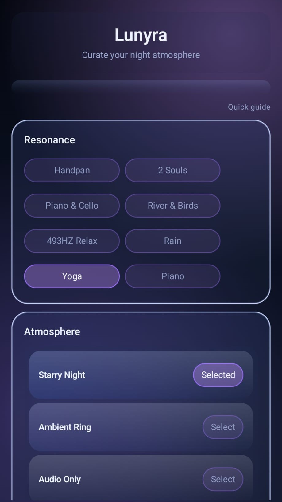

Offline Android · Practical guide
A quiet space without Wi-Fi
Rain on a quiet evening. A river while you read. A familiar sound in an unfamiliar room. Here is what to check before relying on a sound app away from a connection.
Offline should mean ready before you need it
Some sound apps stream their audio; others require you to download each track. Before travelling, install your app and test the actual sound you want with Wi-Fi and mobile data switched off. A saved playlist is not necessarily a downloaded playlist.
Lunyra bundles its 18 soundscapes and five living visual scenes with the app. Once installed, you do not need to stream them, create an account or sign in to start a session.
Check these four things on your own phone
- Playback without a connection. Open the app offline and start your chosen sound. Do this before leaving home rather than relying on a hotel connection.
- Audio with the screen locked. Start a short session, lock your phone and listen. This lets you keep the room dark without leaving an animated screen running.
- A timer you understand. Pick a session length and confirm how it ends. Do not assume that every app has an overnight or unlimited setting.
- A comfortable volume. Choose a low level that suits the room. Your phone's output and headphones change how the same recording sounds.

A simple Lunyra session
Choose a soundscape, select a scene and set your session timer. Leave the scene visible if you enjoy the atmosphere, or lock the screen and let the audio play in the background. There is a visual breathing guide if you want a quiet cue to pause.
For reading or a desk session, try one steady sound rather than repeatedly changing tracks. For a wind-down, keep the interaction simple: choose, start and put the phone aside. What feels calming is personal; there is no single sound everyone needs to use.
What the one-time purchase includes
- 18 soundscapes, including nature and ambient textures.
- Five living scenes: three cosmic skies, a moonlit forest and a flowing river.
- A session timer, visual breathing guide and background audio.
- Offline playback, no adverts, no account and no subscription.
Lunyra is £0.99 in the UK, paid once, verified on 30 September 2026. Google Play shows the current price and device compatibility for your country before purchase. It is an Android app, not an iPhone app.
Useful boundaries
Lunyra is a sound and atmosphere app. It is not a sleep tracker, alarm, medical device or treatment, and it does not promise a particular sleep outcome. For your own device, check playback before relying on it for a longer session.
For more on the purchase model, read Android sleep sounds without a subscription. For app data details, see the privacy policy and the current Google Play Data safety information.